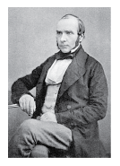

John Snow's map of cholera outbreaks from nineteenth century London changed how we saw a disease and is considered as one of the most inspirational examples of data journalism.
In the world of the 1850s, cholera was believed to be spread by miasma in the air and the sudden and serious outbreak of cholera in London's Soho was a mystery.
His map essentially represented each death as a bar as you can see in his map on the right. It became apparent that the cases were clustered around the pump in Broad (now Broadwick) street, which was polluted by sewage from a nearby cesspit.
This visualization worked for this particular case, but doesn't scale. Those bars could overlap, extend of streets or other features of the map and most importantly are hard to compare. They are aligned with each street, so opposite sides or perpendicular streets make a direct comparison difficult.
This is why we created a new map and took his data to the third dimension.